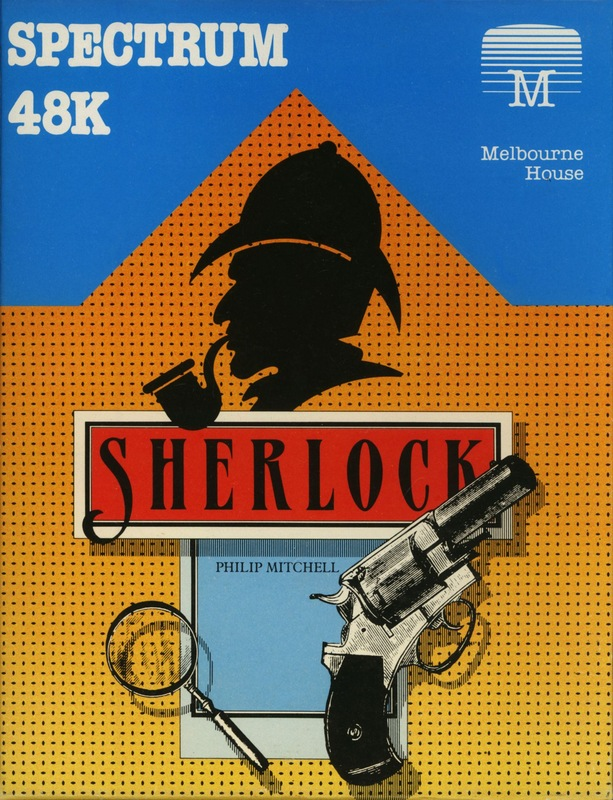
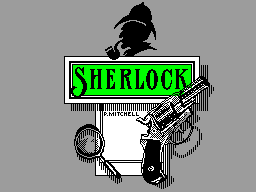
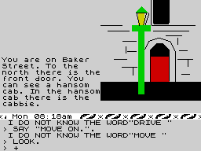

Sherlock


{kind=link}

| Publisher: | Melbourne House |
| Price: | £14.95 |
| Year: | 1984 |
| Source: | CRASH, Issue 9 |

Rumours of an adventure from the Melbourne House stable to match the universal popularity of The Hobbit were rife in February early this year. So complex has the game proved to be that it’s taken until this time to issue a working copy and the game even now, at this late date, shows signs it may require some more work before it can be released.
Sherlock is an amazingly complex program based on the famous Sir Arthur Conan Doyle books featuring the super sleuth Sherlock Holmes, fiction’s most famous detective. You proudly take the role of Holmes assisted by your ever-faithful companion and fellow lodger, Dr. Watson. The story is authentically set in the dimly gaslit, foggy streets of Victorian London. The plot has intrigue, suspense and danger but much of the early game is about shrewd observation, analysis and deduction as you quiz the suspects at the scenes of the murders. Your objective is to solve a number of different crimes and to avoid getting yourself killed.

A subset of English, Inglish, first seen in The Hobbit, is used to communicate with the program which utilises a large vocabulary of 800 words. Each sentence must have a verb and there are a few simple, and mostly obvious, rules governing the use of adverbs and adjectives. Several actions or sentences can be linked in a manner which allows many different permutations. ANIMTALK is another strong feature, which allows you, Sherlock Holmes, to instruct the other characters what you would like them to do — but each character remains independent and can refuse to cooperate. Where this form of conversation proves most useful is when discussing the case with Watson and Lestrade, an Inspector from Scotland Yard. You can pick their brains generally or direct their thoughts to a particular item or incident. Conversations, as The Hobbit, are structured around the general format:
SAY TO WATSON "TELL ME ABOUT (THE PISTOL)". Common modifiers are "TELL ME ABOUT YOUR ALIBI" and "TELL ME ABOUT YOUR ADDRESS".
Sherlock Holmes never walked where he could take a hansom cab or catch a train and so one of your first tasks once you hit the London streets is to hail a cab. Here you confront one of the strangest things — the cabbie is not familiar with anything other than street names. But before you rush out and buy up all the London A-Z guides the only roads I needed were Buckingham Palace Road (for Victoria Station) and Baker Street. To catch a train you will need to go to the appropriate railway station and find the correct platform. You may be surprised to find steam trains running around the underground which takes you from Victoria to Kings Cross to catch a train to Leatherhead! I’m sure Melbourne House have researched all this and found it authentic — but what a surprise. Movement through houses and around Leatherhead is greatly facilitated by use of the arrow keys.

Time passes as in real life when in a cab or train which can be profitably used conversing with Watson or examining objects. Of course, being an impatient reviewer I just WAITed ... This method of accelerating the passage of time can be disorientating since other characters in the adventure do not stop carrying out their actions. Each independent character will act in a manner befitting his/her personality and will vary each time you play Sherlock. The literature even suggests a crass approach to a suspect or witness may not elicit a response.
Playing the adventure has you in the sitting room around breakfast-time, where you sit with Dr. Watson, surrounded by the paraphernalia that marks the place as their abode — pipe rack, charts, diagrams, oil lamp, sofa and acid stained table. You sit and talk to Watson for about 10 minutes but it is only when you open the plain door that he decides to spill the beans on what’s been engrossing him. It’s an article in the Daily Chronicle. Two close friends, Mrs. Brown and Mrs. Jones, were murdered last night in separate incidents although apparently with the same weapon. The crimes took place in Leatherhead. Inspector Giles Lestrade from Scotland Yard has taken an interest in the case and will be going to the scene this morning.
It’s reasonably straightforward to get out of the house and into Baker Street. In the street you are told that to the north lies the front door. Baker Street is a north-south street but since I don’t live in London I won’t push the point. GET IN CAB seems in order once I’ve hailed one but it really is some measure of how pedantic this game is if I tell you that this order brings the reply ‘I see no cab that you can get’ yet GET INTO CAB brings the most welcome ‘You get into the hansom cab’. Isn’t a game getting too sophisticated for its own good when it appears so unfriendly as to be unable to accept either IN or INTO in this instance? For that matter what’s so wrong with ENTER?
If The Hobbit set new standards in its time for graphics then surely this adventure does the same for descriptions. These are so copious the game more resembles a novel than an adventure game. Here is the comparatively terse description of your cab journey:
‘You talk to the cabbie. You are travelling the streets of London in a hansom cab, the sun shines through the windows onto your face. You can see a hansom cab. In the hansom cab there is a cabbie.’
Notice the clinical end which typifies many descriptions in the game. This clinical behaviour is also seen if you EXAMINE ALL where ‘You cannot examine me’ and ‘You cannot examine Watson’ appear in the bottom part of the screen! The examine reports mostly consist of the nauseatingly honest ‘You examine the oil lamp. You see an oil lamp.’ Here again you just get that inkling that the game’s too big for its boots.
As in The Hobbit you must be careful with long scrolling descriptions where a key depression which you thought to be your next input is taken to be a signal to carry on with the scrolling. By the way, about that cab journey, try and be a dishonest Holmes and dodge your fare.
After the cab comes the Underground which, like the railway trains, appear to be free — or did I just miss the ticket office? While I’m with money; during a slack time I counted my money. I had five dollars and 7/6. So Sherlock Holmes was just another American tourist! Back to the railway and you must note that Kings Cross is the terminus for Leatherhead but what I can’t tell you is how to get onto the trains. Half the trouble at this stage is getting on a train that comes in without it immediately pulling out on you. Very infuriating. ‘You see a steam train. In the steam train is Inspector Lestrade.’ At last I’ve actually managed to get to Kings Cross before he’s left for Leatherhead — should have a super long and informative discussion of the case on the journey with him. But No! What’s this!
‘Inspector Lestrade with a surprised look on his face, says “Well, Holmes fancy seeing you here.” The train pulls out of the station.’ This program was just designed to annoy me.
Although the game clearly has a lot to offer there are one or two niggles. The silent key entry is as error prone as you might expect after being wooed by all those sophisticated beeps and buzzes that are liberally activated in most modern adventures these days. That bane of all illiterate code pushers — the spelling mistake, raises its conspicuous head, and then there’s that enigma; why is Mrs. Brown’s house dark at 1.53 p.m.?
Sherlock is an incredibly sophisticated program. The most impressive feature is the convincing way in which the leading characters go about their interrogations and how these can be followed up with meaningful discussion between the protagonists. The unfriendly language is no worse than with The Hobbit and the word matching this entails will be good for the endless articles and help pages which will necessarily ensue. The game can make you feel faintly ridiculous when, after typing in a suitably long and complex sentence, you are greeted with ‘I do not understand the word murder.’
COMMENTS
| Difficulty: | Difficult but playable |
| Graphics: | Not many, average |
| Presentation: | Black on white. Poor on colour TV |
| Response: | Fast |
| Special features: | Interactive characters |
| General rating: | Excellent if bugs (including crashes) removed |
| Atmosphere: | 10 |
| Vocabulary: | 8 |
| Logic: | 10 |
| Debugging: | 4 |
| Overall value: | 8 |